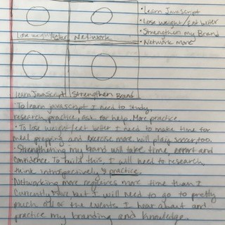

Massage therapy is something I am passionate about. It contributes to a healthy lifestyle. I love helping people and healing people. I am great at things that involve using my hands. In massage therapy, it is important to strike a balance between customer service, team work and knowledge and understanding of a variety of modalities and techniques.
I want to work as an employee at a small local business. In the future, I potentially would want to start my own business.
Hello! My name is Natalie Woodard. I am interested in creating web or phone applications to help people communicate in different languages. I am doing this to afford a bigger family and to travel more. I am doing this by furthering my education with coding. Are you interested in developing language communication applications?
What a week! At the beginning of the week I was feeling very overwhelmed, but I am starting to have fun writing code. I am struggling with some things a little, like the snap challenges. I have learned a lot but I still feel pretty lost. I am looking forward to the day this coding stuff makes sense!
This past week, although it was a short one, felt pretty rough. I've been feeling very tired lately, no matter the amount of sleep I get, and that makes me emotional. I am behind on my object oriented project, and very confused. I am looking forward to meeting my tech tutor. Last Friday, we went to an app contest at UNM and it was really fun! I liked the FilmTours app, and spoke with them after their presentation. I suggested that they make a social networking component to go along with it, and they liked that idea. My group who carpooled with me and I didn't stay to find out who won, but we had a good time while we were there.
I didn't cry this week! I see that as a victory. We got into our Capstone groups this week and hit the ground running with them. I think everyone in my group works really well together and everyone is contributing great insight to the project. We had an interview with Dan to help motivate our project because it is mostly for him. I am stressed out about all the projects I have going at the moment. I am hoping I can get a lot done this weekend to help me catch up for next week. Friday's community lunch and guest speakers was really fun and informative. I thought the video mapping stuff was really neat. I would have stayed after to talk to people, but I had a headache, so I just went home. I am looking forward to meeting my tech tutor on Monday.
This week was actually very successful for me. I finished my PWP early--barely! I had a little breaksdown from frustration that morning because I didn't think I was going to get it turned in on time, but things got worked out. My capstone team had lunch together on Wednesday and got to know each other a little better. Although we all have different backgrounds and stuff going on in our lives, we mesh really well together. I finished my bootstrap challenge early this week, too. At first I was having a hard time getting things to work, but Brent helped me by providing different links, then everything worked out from there. Friday, I finished bootstrap and then worked on creating my table of classes for capstone. Then we watched some really good presentations from some awesome people. I really enjoyed the speakers this time. I am excited to not be bogged down wiht a lot of homework this weekend. I need some R&R before the storm hits again. I will work on my resume, though.
This week was pretty rough, our Capstone team had a bit of a setback. We began to unit test on Friday afternoon and met up for about 3 hours over the weekend. I'm beginning to feel a bit overwhelmed having so many projects to work on all at once, but I know I'll make it through. I am a bit worried about the assessment that is coming up, because I don't feel like I know that much to be tested. I know it'll be open internet, so I can find the answers, but I get nervous for tests regardless. I started working on my PWP Milestone 2B as well, but have not gotten as far as I should've at this point. Oh well, HALF WAY THROUGH!
This week felt a little overwhelming. I was grateful for our snow day on Tuesday, but I didn't get as much homework done as I would have liked. It felt good to get a lot of my pro dev homework caught up, though. I met with my tech tutor a couple times and she ended up joining my soccer team! I worked on javascript challenge, my pwp and our Capstone projects. I feel like I am still behind, but I'm just trying to keep my head up for now. I need to remember to BREATHE. The mantra that works best for me is, "inhale, I breathe in. Exhale I breathe out." It usually works pretty well for me. This weekend was not a good one, but things will get better. I am optimistic.
This week was kind of rough at the start due to personal things, but I still managed to make it to class every day. By the end of the week things were a lot better. I am making slow progress on my PWP, but I still have a lot of styling to get done before it's due next week. We are also making good progress on our Capstone project now. We made it out of the line testing phase and into our API phase. I'm a little worried about that, but I have enough support to figure it out. I'm getting anxious/nervous for our mock interviews and technical interviews, but I know I won't totally mess up unreputably. I will just be surprised if I get an offer for an actual interview, but I'll still keep my fingers crossed and do my best. I am looking forward to this weekend because our soccer season starts up again. But I will have to start managing my time even better because of it.

The first photo represents where I am coming from before starting this bootcamp. I have a lot of experience, but I still feel lost. It also represents how I feel right now, in this bootcamp. I am in the midst of a lot of chaos and confusion, but I am trying to embrace it. I am trying to not compare myself with anyone, but that can be hard when I feel like I am so far behind them, not understanding anything. The second photo represents where I would like to see myself in 3 years. I chose this photo because I want to be successful in a career and well on my way to starting a family with my husband. We both have baby fever, but we know it's not financially stable or smart to start a family when neither of us make much money. In 3 years I hope to be making at least $50,000/yr. I hope my husband is doing somehting that he loves and makes him good money. And I hope that we have at least one, possibly two children.

| Identity Chart | Professional | Personal |
| Identity | Natalie Woodard, The Coding Linguist | Natalie, Natz |
| Channels | LinkedIn, StackOverflow | Facebook, Instagram | Content | I am a junior web developer, Massage Therapist, B.A. in Linguistics | I play soccer on an outdoor coed team, we will soon be sponsored by the NM United pro team |
This activity was fun because I love board games and I hadn't played this one before. Taylor took the lead because he had played the game before and the rest of us hadn't. I was very confused about how to play at first, but we eventually started getting the hang of it. There was no tension or disagreements within our group. I felt like my team had my back the whole time and we communicated really well. Before making any moves, we would discuss our options. I felt good when we started getting the hang of it, but import it turns out that Taylor had forgotten a rule that actually was pretty important for us to be able to win the game. So, after we lost the first time, we started again and I'm sure we could've won that time, but we ran out of time. I really appreciate how supportive everyone in our group is. The only time I felt anxious at all was when we started the second game and time was running out. I just had a good time playing the game with my group (dare I say, friends) and although we didn't win, it turned out to just be a really fun time.
